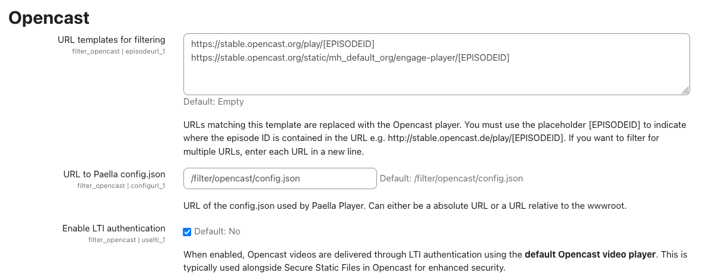

Settings
The plugin provides the following configuration options:

- URL templates for filtering: Defines the URL patterns that will be replaced with the Opencast player.
- To determine the correct URL, check which URL is inserted into the text by the repository.
- Typically, only one URL needs to be defined.
-
Use the placeholder
\[EPISODEID]in the URL to indicate where the episode ID should be inserted, e.g.,http://stable.opencast.de/play/[EPISODEID]. -
URL to Paella
config.json: Specifies an absolute or relative URL to theconfig.jsonfile used by the Paella Player. -
This configuration file can be customized to modify the appearance or behavior of the Paella Player.
-
Enable LTI authentication: Enables authentication to ensure videos are displayed correctly when Opencast is behind the Secure Static Files security layer.
- When enabled, videos will be displayed in the default Opencast video player.
- It uses the LTI Credentials configured in Opencast API (tool_opencast) plugin.
- Important Note: As mentioned in the Opencast API (tool_opencast) plugin settings, if you plan to use the LTI Authentication feature and have a multi-node Opencast instance, you must add an additional role (
ROLE_UI_EVENTS_EMBEDDING_CODE_VIEW) to the Opencast API user's roles to ensure proper functionality.
NOTE: After configuring this plugin, you must activate it in the filters.